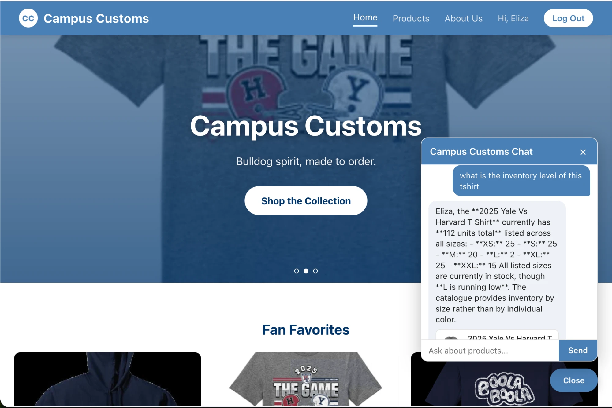
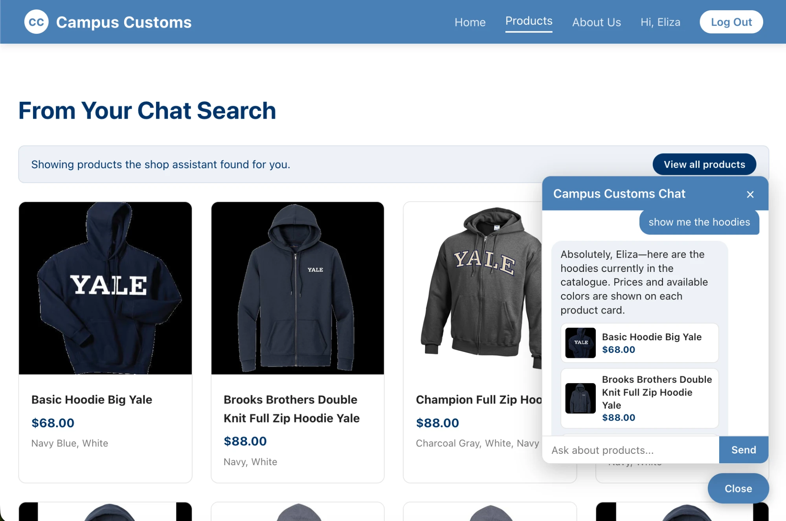
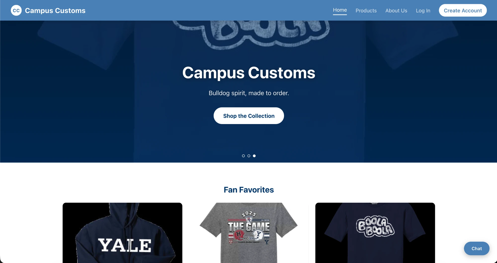

Manual test of the running app, per Problem 11.

Asking the chat "what is the inventory level of this tshirt" returns the real per-size stock counts and price for the 2025 Yale Vs Harvard T Shirt, pulled directly from campus_customs.db rather than guessed.

Asking "show me the hoodies" triggers the category-lookup tool, and the Products page updates live to show only matching hoodie cards — the chat and the page stay in sync automatically.

The homepage now features three Fan Favorites — the Basic Hoodie Big Yale, the 2025 Yale Vs Harvard tee, and the Boola Boola tee — using the shop's own product photos, and each card links straight to that product's page. First-time visitors get an immediate way into the catalogue instead of a wall of text.